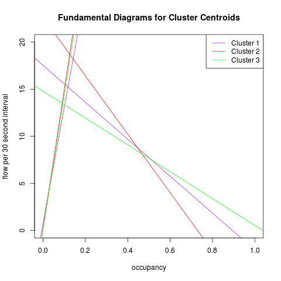

Analysis currently consists of the following steps:
- Download 10 months worth of 30 second PEMS sensor data for the Bay Area, about 130 GB.
- Separate it into groups based on station, focusing only on mainline stations (about 1500).
- Fit a (naive) fundamental diagram by using two robust linear models for each station: One for data with occupancy less than 0.15 and one for greater.
- Note: Using millions of data points per station allows constructing tight confidence intervals for the parameters.
- Then these 4 parameters: slope and intercept for congested and uncongested, were used as the inputs to a kmeans clustering.
- k = 3 was chosen for k means based on comparing the between cluster sum of squares with total sum of squares for various values of k and parameter tuning.
- Resulting clusters and parameters are plotted on the map below.
The image below shows the centroids of the clusters.
These correspond to the "typical" fundamental diagram from within each cluster.
